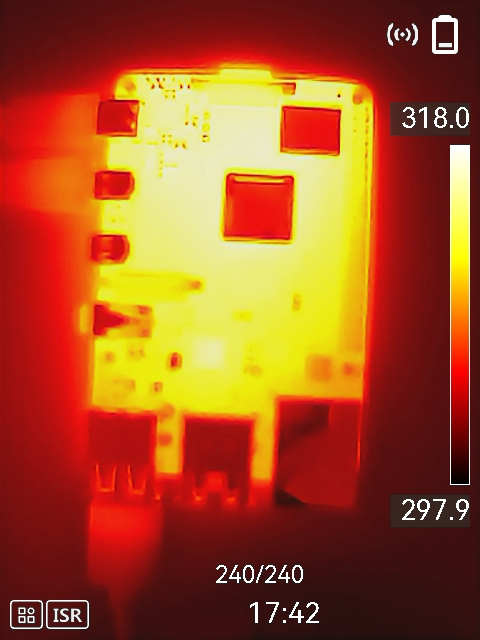
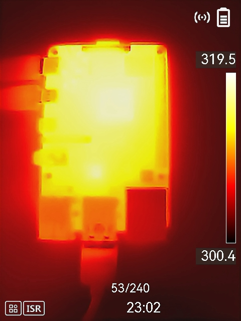
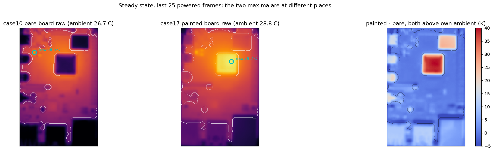
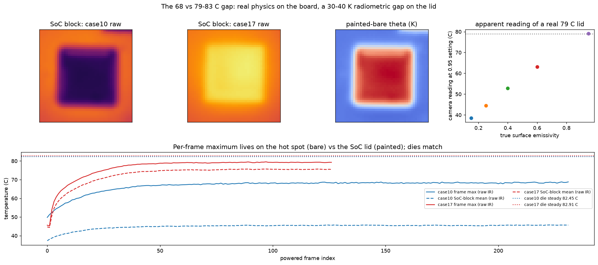

Influence of Surface Reflectivity on Infrared Readings
Same Raspberry Pi 4B under the same 100 % CPU load — bare board (case10) vs. matte black painted board (case17), camera emissivity fixed at 0.95
The two groups give two perspectives on the same effect. Group 1 shows what the thermal
camera itself reports: on the bare board the metal SoC lid — physically the hottest part — reads
dark and cold, because its low emissivity makes it reflect the cool room instead of emitting.
Matte black paint removes that artifact. Group 2 shows the same effect after Python
processing of the exported raw temperature fields: the two steady-state maps and the radiometric
analysis behind the 30–40 K gap on the lid.
Group 1
Raw IR camera images — bare vs. painted
Uncalibrated camera JPEGs at steady state, each with its own auto color scale (units: K). Identical load, identical die temperature — only the surface finish differs.

Bare board (case10)
Scale 297.9–318.0 K. The SoC lid (centre) appears darker than the board around it — its shiny metal surface reflects the ~26.7 °C room, so the camera under-reads the physically hottest spot by 30–40 K.

Matte black painted board (case17)
Scale 300.4–319.5 K. With emissivity ≈ 0.95 the same lid now reads truthfully and dominates the image (max 79.2 °C on the processed field). Both sessions sit at a die temperature of ≈ 82.5–82.9 °C.
Group 2
Python-processed fields — aligned together
Matplotlib analyses of the exported temperature matrices (steady state, mean of the last 25 powered frames), rendered at a common width and stacked for direct comparison.

Steady-state maps and painted − bare difference
Left: bare board raw (ambient 26.7 °C) — its maximum, 68.5 °C, sits on a small trusted hot spot while the lid reads cold. Middle: painted board raw (ambient 28.8 °C) — the maximum, 79.2 °C, has moved onto the SoC lid. Right: difference above each board's own ambient — near zero (≈ +0.15 K median) on trusted pixels, up to +40 K over the lid footprint: the radiometric correction the low-emissivity region requires.

SoC block crops and the radiometric explanation
Top: the same 927-pixel SoC footprint in both sessions — suppressed on the bare board, truthful on the painted one. The rightmost panel computes the apparent camera reading of a real 79 °C lid as a function of its true emissivity: at ε ≈ 0.2–0.3 the camera (ε setting 0.95) reports only 40–50 °C, matching the observed bare-board lid readings of 37–46 °C.